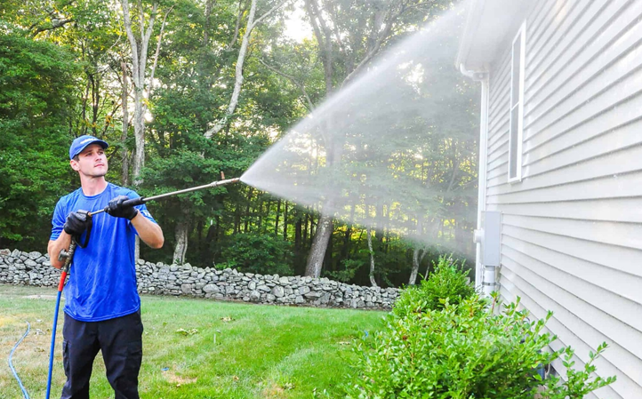
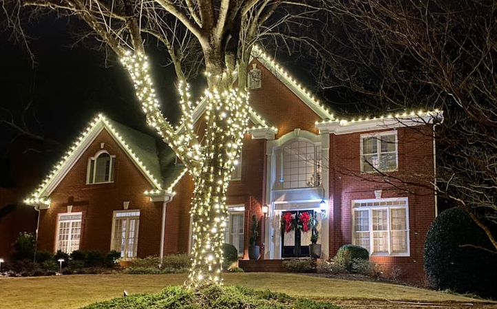
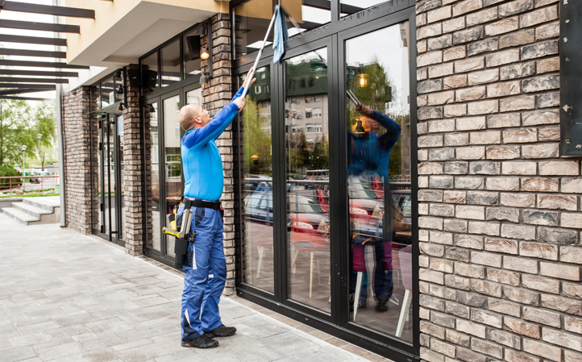

Our services are trusted by homeowners across Nampa and the Treasure Valley who want their properties to look pristine year-round. From residential exterior cleaning to streak-free window cleaning, we handle everything with care and precision. Our eco-friendly cleaning solutions and attention to detail ensure that your home is safe for your family, pets, and landscaping. Whether it’s pressure washing driveways, soft washing siding, or gutter cleaning, homeowners rely on us for reliable, professional, and guaranteed results that enhance both curb appeal and property value.
Businesses throughout Treasure Valley depend on commercial pressure washing and exterior maintenance from Hoover Remover Pros. We help offices, retail locations, and industrial properties maintain a clean and welcoming environment for customers and employees. Services include roof cleaning, window cleaning, and exterior surface restoration, all executed with eco-friendly, safe methods. Our team works around your schedule to minimize disruption, ensuring your property looks professional and well-maintained. Commercial clients appreciate our attention to detail, reliability, and guaranteed satisfaction for every project.


Builders and developers trust Hoover Remover Pros for new construction cleanup and post-construction exterior services. We remove dust, debris, and residues left from construction, leaving homes and commercial properties move-in ready. Our services include soft washing, roof cleaning, and window cleaning, all performed using eco-friendly, safe solutions. By partnering with us, construction professionals ensure their properties are presented at their best, impressing buyers and tenants while protecting the investment. We deliver fast, professional, and thorough service, making every new build shine from the moment it’s completed.